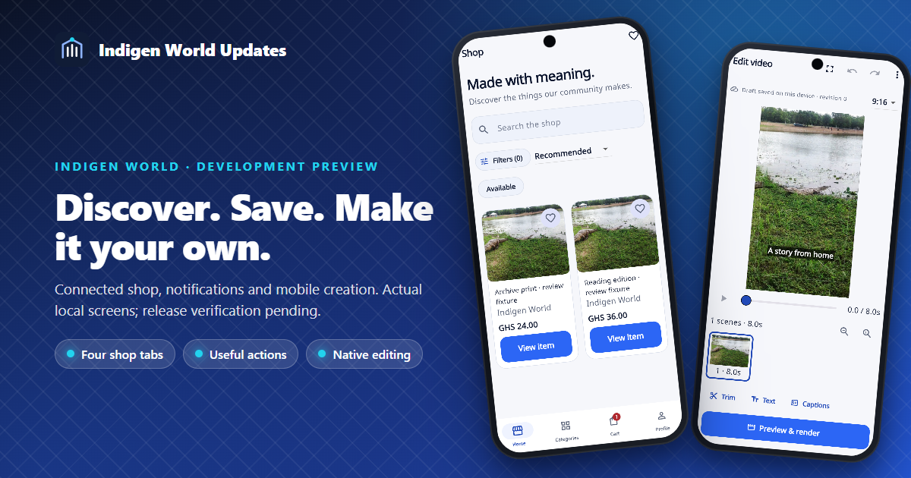
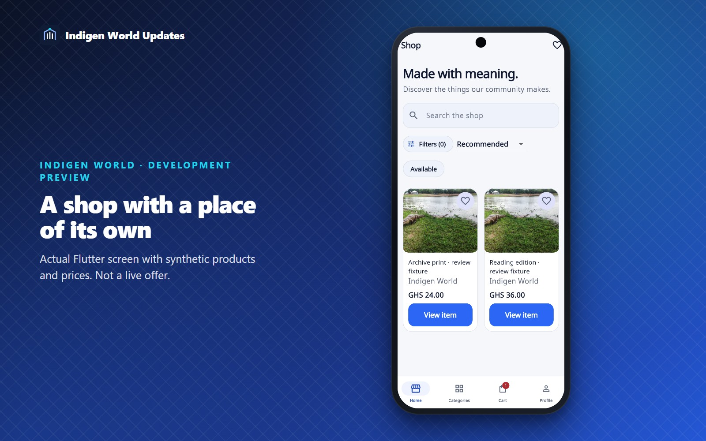
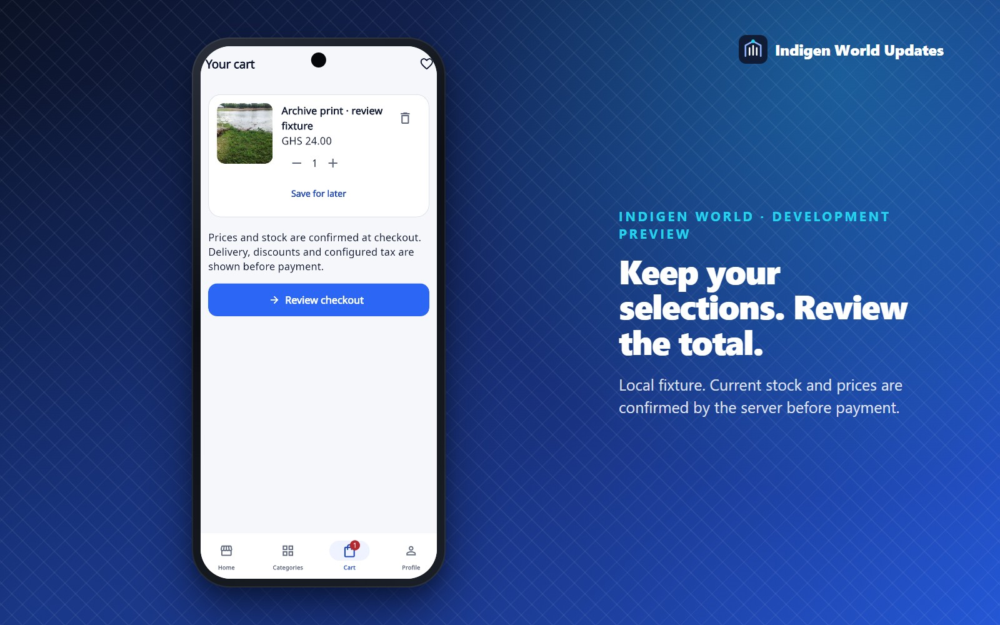
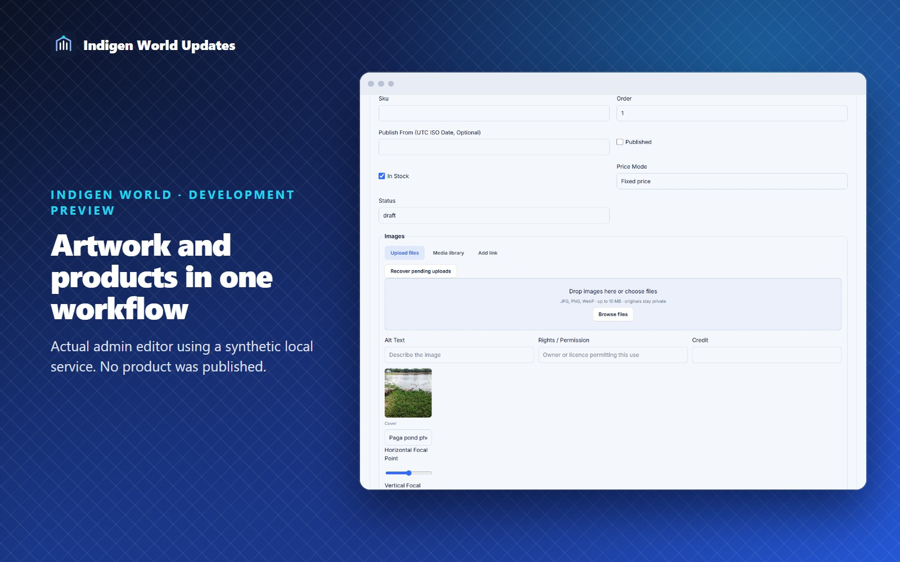
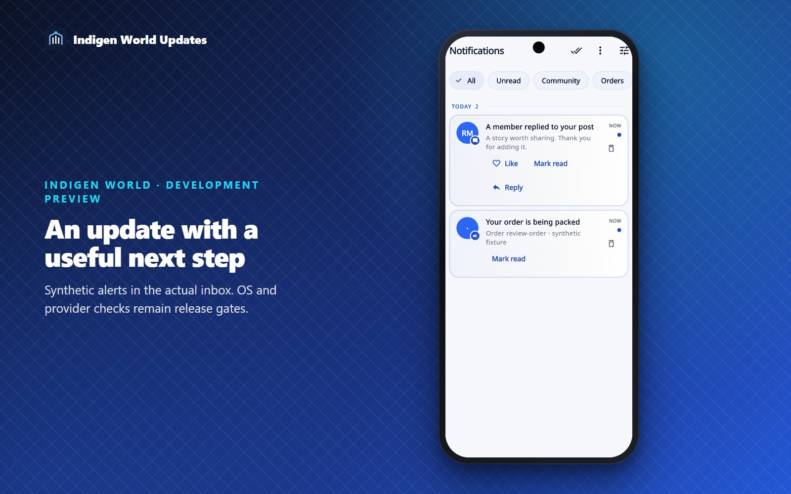
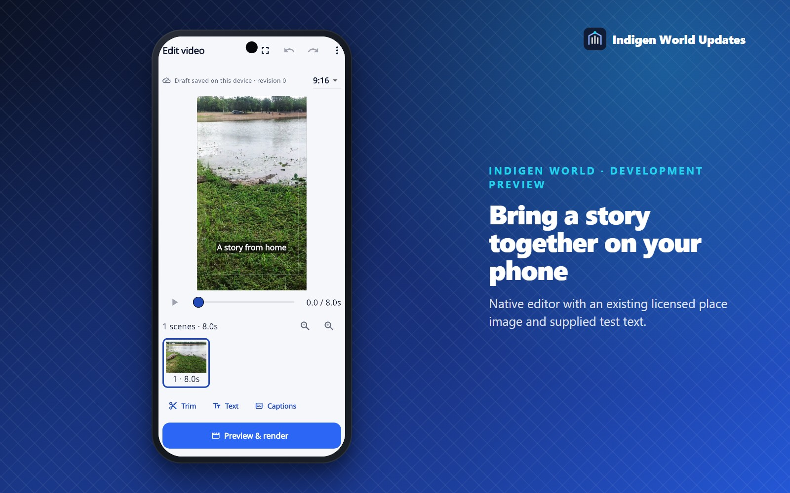

Release preparation update — 17 October 2026. Admin tools, supporting services and the public checkout return page are deployed. A signed Android 0.1.33+42 release bundle is prepared; store availability is a separate step. These screens show the current local implementation with synthetic products, orders and messages. Checkout availability and new native features remain behind configuration and verification gates.
We are bringing the shop, collection artwork, notifications and mobile video creation into a shared set of workflows. The aim is practical: members should be able to find something, save it, understand its status and continue where they left off. Staff need the tools behind those screens to keep the information accurate.
The shop now has Home, Categories, Cart and Profile tabs. Product pages support galleries, variants, saved items and price inquiries. A guest can keep selections on their device; purchasing uses the existing Indigen account. Checkout calculates prices, configured delivery, discounts and tax on the server before opening the provider’s hosted payment page.

Order status separates payment from packing and dispatch. Customers can send an order-specific cancellation, return or support request. Staff can review snapshots, resolve requests, adjust stock with a reason and handle verified transactions and refunds through Finance. Older order requests remain historical requests.

Shared upload controls now offer files, a media library and compatible image links. Staff can add alt text, rights and credit information, choose a cover and focal point, and recover the server state of a pending upload. Originals remain private while the backend checks and processes them. The artwork desk also covers published music, literature, audiobook and film thumbnails; original audio, video and document workflows remain appropriate to those media types.

The notification centre adds filters and supported Like, Reply and Mark read actions. Those actions use the actual post or reply recorded by the server. Quiet hours use the member’s timezone, while optional promotions require opt-in. Staff can save, review, schedule, test and cancel announcements before dispatch.

A compact sponsored placement is prepared above organic comments, using the existing advertising and membership gates. House campaigns have a reserved Indigen-owned identity and separate accounting. The new AdMob placement remains disabled for release until a dedicated real unit and device checks are complete.
The native mobile editor now connects scene editing, trim and split, text, timed captions, looks, licensed library assets, voiceover and export to the existing TribeStudio rendering services. It saves account-scoped drafts and hands the selected edited output back to the normal mobile publishing flow. Members can explicitly choose the original instead.

Text and caption layers are rendered by Flutter before export. A finished output must match the saved project revision and timeline before it can be used for posting. The rendered preview is the place to check the complete sound, stickers and transitions.
Admin and supporting backend changes are deployed, and the signed Android 0.1.33+42 bundle has passed build and integrity checks. This does not confirm store availability. Provider payment/refund checks, a dedicated AdMob unit, a verified house organisation, Apple signing and real-device background, privacy and interrupted-workflow checks are still release gates. Some advanced merchandising and discovery features from the larger brief remain outside this implementation. Checkout is currently closed while support details, policies, delivery and stock are configured. New comment ads, native video export and rich push delivery remain disabled pending their provider and device checks.
Photo: Dieu-Donné Gameli, Paga Crocodile Pond, CC BY-SA 3.0. Screenshots are local product captures with synthetic review fixtures. Indigen World’s existing mark is reused unchanged.